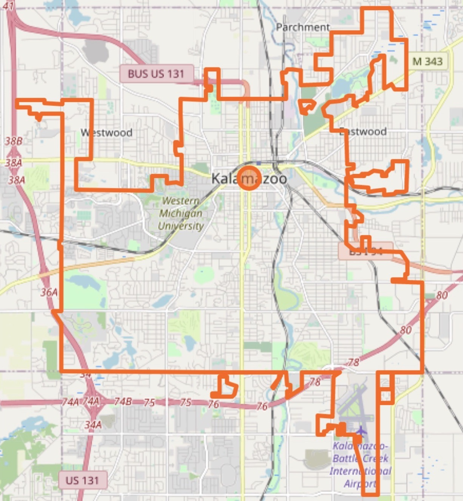

You might know this amazing town from the heartwarming song by the Glenn Miller Orchestra, "I've got a Gal in Kalamazoo"
Check out the video below if you're not familiar with it!
Here are 5 songs that WKFR 103.3 argue to be the best:
Check out the link below to listen to these songs.
5 Best Songs About Kalamazoo
Below gives you an idea of the layout of Kalamazoo:
Image credits to © OpenStreetMap contributors Copy Rights for OpenStreetMap
Some notable things to find in the map: